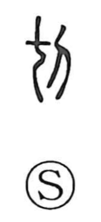

切

Kun: kiru, kireru | On: setsu, sai
to cut ・ pressing ・ urgent ・ sharp ・ appropriate ・ to polish
Explanation
切 combines 七 with 刀, a knife. 七 represents a cut bone or joint, and the knife separates the parts at that point. The graph first concerns cutting and working bone.
Such work requires close attention and precise technique. From the careful cutting come senses of what is exact, essential, or urgently important. Something pressing calls for the same concentrated attention.
The physical action broadens to cutting or severing anything, while the figurative uses include closeness, urgency, and aptness. 切磋 compares improvement of oneself or one’s skill with the careful work of cutting and polishing material.